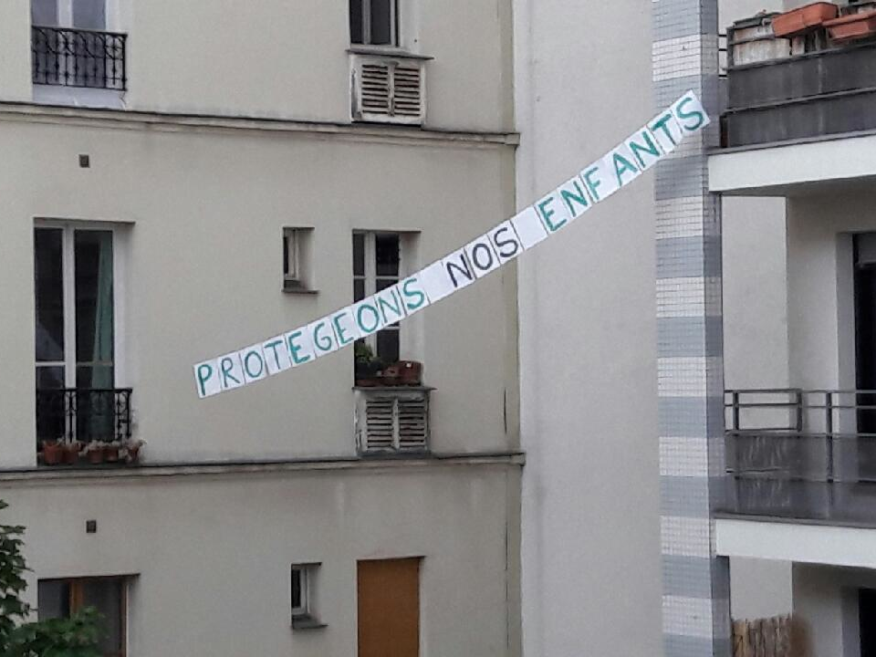
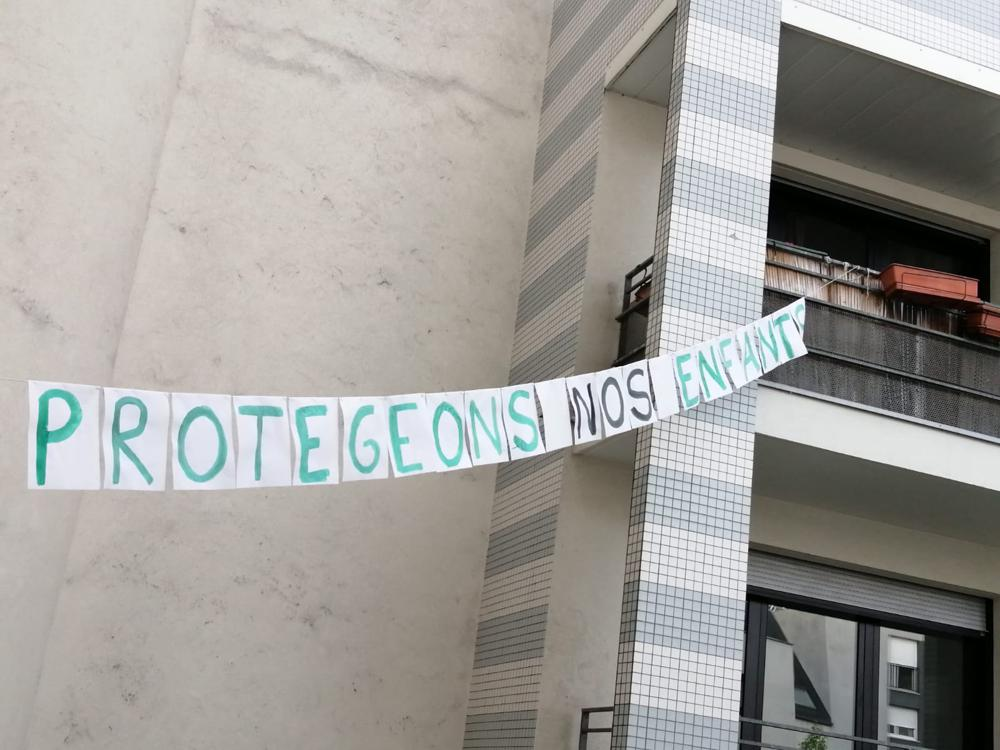

6 mai
La chanson de ce soir : Dès que le vent soufflera
Une chanson de Renaud, que nous chanterons accompagné à la guitare par Juan.
Vous pouvez écoutez l'original ici.
"C'est pas l'homme qui prend la mer
C'est la mer qui prend l'homme"
Moi la mer elle m'a pris
Je m'souviens, un mardi
J'ai troqué mes santiag'
Et mon cuir un peu zone
contre une paire de dockside
Et un vieux ciré jaune,
J'ai déserté les crasses
Qui m'disaient : Sois prudent
La mer c'est dégueulasse
Les poissons baisent dedans !
Dès que le vent soufflera je repartira
Dès que les vents tourneront nous nous en allerons...
"C'est pas l'homme qui prend la mer
C'est la mer qui prend l'homme"
Moi la mer elle m'a pris
Au dépourvu, tant pis...
J'ai eu si mal au coeur
Sur la mer en furie
Qu'j'ai vomi mon quatre-heures
Et mon minuit aussi.
J'me suis cogné partout
J'ai dormi dans des draps mouillés
Ca m'a coûté des sous
C'est d'la plaisance, c'est l'pied !
Dès que le vent soufflera je repartira
Dès que les vents tourneront nous nous en allerons...
C'est pas l'homme qui prend la mer
C'est la mer qui prend l'homme
Mais elle prend pas la femme
Qui préfère la campagne.
La mienne m'attend au port
Au bout de la jetée
L'horizon est bien mort
Dans ses yeux délavés,
Assise sur une bitte
D'amarrage, elle pleure
Son homme qui la quitte,
La mer c'est son malheur !
Dès que le vent soufflera je repartira
Dès que les vents tourneront nous nous en allerons...
"C'est pas l'homme qui prend la mer
C'est la mer qui prend l'homme"
Moi la mer elle m'a pris
Comme on prend un taxi...
Je f'rai le tour du monde
Pour voir à chaque étape
Si tous les gars du monde
Veulent bien m'lâcher la grappe,
J'irai z'aux quatre vents
Foutre un peu le boxon
Jamais les océans
N'oublieront mon prénom...
Dès que le vent soufflera je repartira
Dès que les vents tourneront nous nous en allerons...
"C'est pas l'homme qui prend la mer
C'est la mer qui prend l'homme"
Moi la mer elle m'a pris
Et mon bateau aussi...
Il est fier mon navire
Il est beau mon bateau
C'est un fameux trois-mâts
Fin comme un oiseau hisse ho !
Mais Tabarly Pajeot
Kersauzon et Riguidel
Naviguent pas sur des cageots
Ni sur des poubelles !
Dès que le vent soufflera je repartira
Dès que les vents tourneront nous nous en allerons...
"C'est pas l'homme qui prend la mer
C'est la mer qui prend l'homme"
Moi la mer elle m'a pris
Je m'souviens, un vendredi
Ne pleure plus ma mère
Ton fils est matelot
Ne pleure plus mon père
Je vis au fil de l'eau,
Regardez votre enfant
Il est parti marin
Je sais c'est pas marrant
Mais c'était mon destin.
Dès que le vent soufflera je repartira
Dès que les vents tourneront nous nous en allerons...
Dès que le vent soufflera je repartira
Dès que les vents tourneront nous nous en allerons...
Demain, nous chanterons "What a wonderful world"
Les photos d'hier :
Voici les photos de la dernière banderole :
 Merci à Jean-Pierre pour cette vidéo du temps des cerises :
Hier, nous avons chanté les Amants de la Saint Jean :
Si vous avez des vidéos, des photos, ou des enregistrements, n'hésitez pas à les envoyer à blogdesvoisins@gmail.com !